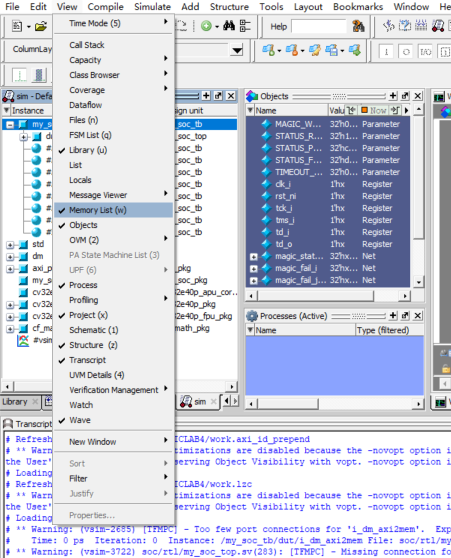
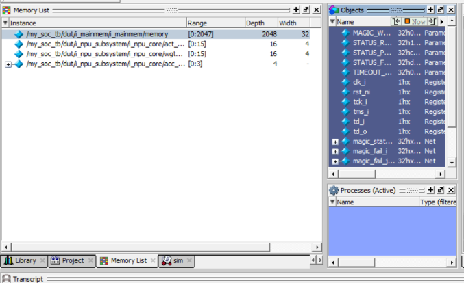
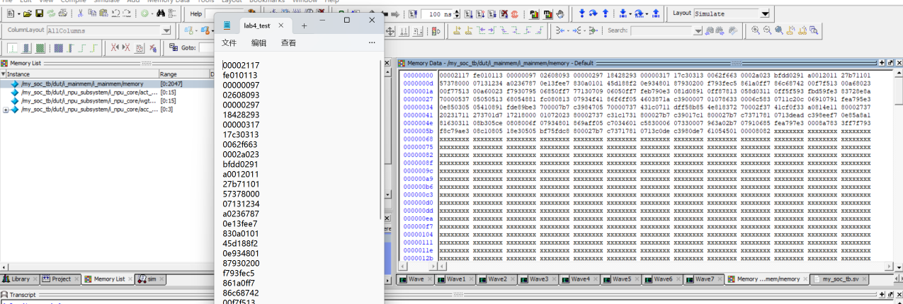
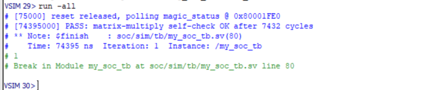
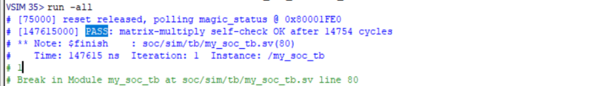
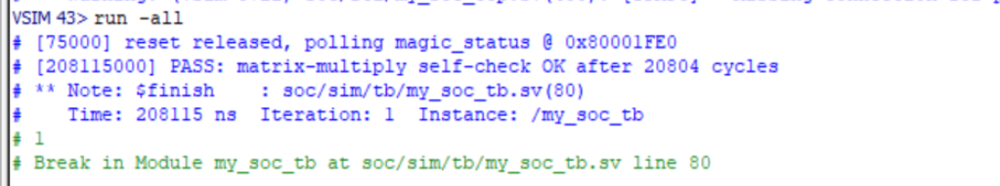

Lab 3：SoC 的集成与仿真
开始之前
1. 实验目标
Lab 1 写的 simple_npu_core 是一个"核"：矩阵整个从端口进来，start 一拉就算，
结果整个从端口出去。Lab 1 讲义里提过，真实芯片不会这样用它——加速器挂在总线上，
CPU 跑程序，通过读写几个地址来喂数据、启动计算、取结果。
Lab 2 你已经见过这条总线：CPU 通过 AXI xbar 访问 bootram 和主存。 本实验要做的，就是在这条总线上再挂一个 slave——你的 NPU。
具体来说：
- 把 Lab 1 的核改成 4×4 输出驻留（output-stationary）脉动阵列，端口不变
- 给它写一层 MMIO 壳：把 CPU 一个 word 一个 word 的读写，翻译成核的
start / act / wgt / out - 修改 SoC 顶层，把 NPU 作为第 4 个 slave 接到 xbar 上
- 用 C 程序和手写汇编两种方式驱动它，在 ModelSim 中完成 SoC 级仿真
完成本实验后你将理解：
- MMIO（Memory-Mapped I/O）：硬件就是一组"地址"，软件用普通的 load / store 访问它
- 怎样读懂、修改 xbar 的配置——master / slave 数量、地址映射
- 从一条 C 语句到总线上的一次读写，中间经过了哪些环节
2. 实验环境
| 项 | 说明 |
|---|---|
| 仿真器 | ModelSim（同 Lab 2 §2） |
| 单元仿真 | Icarus Verilog（同 Lab 0），也可以用 ModelSim |
| RISC-V 工具链 | 不需要安装，测试程序已编译好 |
| 发布代码 | lab3-ST/SoC_cv32e40p/ |
发布目录结构：
SoC_cv32e40p/
├── cpu_cv32e40p/ CV32E40P CPU（不需修改）
├── simple_npu/
│ ├── rtl/
│ │ └── simple_npu_top.sv MMIO 壳骨架 <- Task 2
│ └── tb/
│ ├── tb_npu_check.sv Lab 1 验收 tb（原样） <- Task 1 自检
│ └── tb_simple_npu.sv 壳 + 核的单元 tb <- Task 2 自检
└── soc/
├── rtl/
│ ├── my_soc_top.sv SoC 顶层 <- Task 3
│ ├── my_npu_subsystem.sv NPU 子系统包装（已写好）
│ ├── include/my_soc_pkg.sv 地址空间常量 <- Task 3
│ ├── axi/ mem/ debug/ ... 与 Lab 2 相同
└── sim/
├── filelists/my_soc_tb.f 编译清单 <- Task 3
├── tb/
│ ├── my_soc_tb.sv SoC 顶层 testbench
│ ├── lab3_test{1,2,3}.c 测试程序源码（只读）
│ ├── lab3_test{1,2,3}.hex 编译好的程序镜像
│ └── lab3_hand.hex 手写汇编示例 <- Task 5
└── sw/ 反汇编、启动代码、链接脚本（思考题用）
你要写或改的文件：
| 文件 | Task |
|---|---|
simple_npu/rtl/simple_npu_core.sv、simple_npu_pe.sv |
1（从你的 Lab 1 复制过来再改） |
simple_npu/rtl/simple_npu_top.sv |
2 |
soc/rtl/my_soc_top.sv、soc/rtl/include/my_soc_pkg.sv、soc/sim/filelists/my_soc_tb.f |
3 |
soc/sim/tb/ 下的 testbench 和 .c / .hex 不要修改。
和 Lab 2 包的区别
本实验的 SoC 就是 Lab 2 修好之后的样子（filelist、bootram、axi2mem、sram_ff 都已完成），
只是目录组织不同：仿真相关文件在 soc/sim/ 下，而不是根目录的 sim/。
另外本包没有 run_sim 脚本，仿真命令见第 4 节。
3. 背景知识
Lab 2 §4 讲过的 AXI master / slave / xbar、axi2mem、同步读下一拍有效、启动流程、filelist， 本节不再重复，需要时回去翻。下面只讲新东西。
3.1 加上 NPU 之后的 SoC
┌─────────────────────────┐ ┌─────────────────────────┐
│ CV32E40P │ │ Debug Module │
├────────────┬────────────┤ ├─────────────────────────┤
│ instr │ data │ │ master │
└─────┬──────┴──────┬─────┘ └────────────┬────────────┘
│ │ │
slave[0] slave[1] slave[2]
└─────────────┴──────────┬────────────────────────┘
│
┌───────────────────────────┴──────────────────────────────┐
│ axi_xbar │
└──────┬──────────────┬──────────────┬──────────────┬──────┘
master[0] master[1] master[2] master[3] <- 新增
│ │ │ │
┌──────┴─────┐ ┌──────┴─────┐ ┌──────┴─────┐ ┌──────┴─────┐
│ axi2mem │ │ axi2mem │ │ axi2mem │ │ axi2mem │
│ i_axi2boot │ │ i_axi2sram │ │i_dm_axi2mem│ │ i_axi2npu │
└──────┬─────┘ └──────┬─────┘ └──────┬─────┘ └──────┬─────┘
│ │ │ │
┌──────┴─────┐ ┌──────┴─────┐ ┌──────┴─────┐ ┌──────┴──────────┐
│ bootram │ │ my_mainmem │ │ dm_top │ │my_npu_subsystem │
│0x0001_0000 │ │0x8000_0000 │ │0x0000_0000 │ │ 0x7000_0000 │
└────────────┘ └────────────┘ └────────────┘ └──────┬──────────┘
│
┌────────┴────────┐
│ simple_npu_top │ 壳（Task 2）
│ ┌─────────────┐ │
│ │simple_npu_ │ │ 核（Task 1）
│ │ core │ │
│ └─────────────┘ │
└─────────────────┘
和 Lab 2 的图相比只多了最右边一列：xbar 多一个 master[3] 端口，
经过 i_axi2npu 转成类存储器信号，接到 my_npu_subsystem。
在总线看来，NPU 就是一块"特殊的存储器"——它和主存用的是同一种 axi2mem，
区别只在于往某些地址写数据会触发计算，从某些地址读出来的是计算结果。
my_npu_subsystem.sv 已经写好，它只做一件事：把 axi2mem 那一侧的
req / we / addr / wdata / rdata 改名接到壳的 ena / wea / addra / dina / douta 上，
其中 addra = addr_i[13:2]（字节地址转成 word 地址，只保留 12 位）。
3.2 MMIO：硬件就是一组地址
C 程序里访问 NPU 是这样写的（摘自 soc/sim/tb/lab3_test1.c）：
#define NPU_BASE 0x70000000u
#define NPU_CONTROL (*(volatile uint32_t *)(NPU_BASE + 0x0000))
#define NPU_STATUS (*(volatile uint32_t *)(NPU_BASE + 0x0004))
#define NPU_ACT(i) (*(volatile uint32_t *)(NPU_BASE + 0x0040 + 4*(i)))
NPU_ACT(5) = 7; // 写
NPU_CONTROL = 1; // 写 1 启动
while ((NPU_STATUS & 1) == 0) { } // 轮询直到 DONE
NPU_ACT(5) = 7 这一句，一路走下来是这样的：
C 语句 NPU_ACT(5) = 7
│ 编译
▼
机器指令 sw a2, 0(a5) a5 = 0x7000_0054, a2 = 7
│ CPU 执行，数据口发出写请求
▼
CPU 数据口 data_req=1 data_we=1 data_addr=0x7000_0054 data_wdata=7
│ axi_adapter 转成 AXI 写事务
▼
xbar 查 addr_map：0x7000_0054 落在 NPU 区间 -> 路由到 master[3]
│
▼
i_axi2npu npu_req=1 npu_we=1 npu_addr=0x7000_0054 npu_wdata=7 （只持续 1 拍）
│ my_npu_subsystem：addra = addr[13:2]
▼
壳 ena=1 wea=1 addra=21 (=16+5) dina=7 -> act_reg[5] <= 7
读也一样，只是方向反过来：壳在下一拍把数据放到 douta 上，沿原路返回 CPU。
关于 volatile：对编译器来说，*(uint32_t *)0x70000004 只是一个普通内存地址。
如果不加 volatile，编译器看到 while ((NPU_STATUS & 1) == 0) 里反复读同一个地址、
中间没有任何写，就有权只读一次、然后死循环；看到连续两次写同一个地址，
也有权只保留最后一次。volatile 告诉编译器"这个地址的内容会在你不知道的时候变，
每次读写都必须真的发出去"。MMIO 寄存器必须用 volatile 访问。
3.3 MMIO 地址表
这张表是冻结的：测试程序已经按它编译成 hex，壳必须严格遵守。
| 寄存器 | 字节地址 | 壳看到的 addra |
读 / 写 | 含义 |
|---|---|---|---|---|
CONTROL |
0x7000_0000 |
0 |
写 | 写入 bit[0] = 1 时启动一次计算；读返回 0 |
STATUS |
0x7000_0004 |
1 |
读 | bit[0] = DONE |
ACT[k] |
0x7000_0040 + 4k |
16 + k |
读写 | 矩阵 A，ACT[j*4+i] = A[i][j]，低 4 位有效 |
WGT[k] |
0x7000_1000 + 4k |
1024 + k |
读写 | 矩阵 B，WGT[j*4+i] = B[i][j]，低 4 位有效 |
OUT[k] |
0x7000_2000 + 4k |
2048 + k |
读 | 矩阵 C，OUT[j*4+i] = C[i][j]，低 10 位有效 |
k ∈ [0, 15]。打包规则和 Lab 1 完全一样（列优先），所以 ACT[k] 就对应核的 act[k]，
OUT[k] 就对应核的 out[k]，壳里不需要做任何下标变换。
没列在表里的地址：读返回 0，写忽略。
3.4 axi2mem 对壳的时序约束
壳的端口就是 Lab 2 §4.3 那组类存储器信号（只是改了名字），所以它必须遵守和
sram_ff 一样的契约，外加两条 MMIO 特有的：
| 端口 | 含义 |
|---|---|
clka / rst_ni |
时钟 / 异步低有效复位 |
ena |
本拍有访问（= axi2mem 的 req_o） |
wea |
1 = 写，0 = 读 |
addra[11:0] |
word 地址 |
dina[31:0] |
写数据 |
douta[31:0] |
读数据，请求后下一拍有效 |
- 读数据下一拍有效。和 Lab 2 的
sram_ff完全一样：请求在 cycle T，douta在 T+1 给出。做法是先组合选出要读的数，再打一拍寄存器。 - 写只看
ena && wea的那一拍。ena = 0时dina上可能是任意值， 所以所有写操作都要用ena && wea门控。 - 一次写就是一拍。CPU 写一次
CONTROL，壳只会看到一拍ena && wea， 所以ena && wea && (addra == 0) && dina[0]天然就是一个单拍脉冲， 可以直接接到核的start上。 - 读不要有副作用。
axi2mem在 READ 状态下只要总线侧还没接收数据（r_ready = 0）， 就会保持req_o = 1、地址不变（见soc/rtl/axi/axi2mem.sv第 175~187 行）， 也就是说同一次读，壳可能看到不止一拍请求。如果"读 STATUS"会改变壳的状态 （例如读一次就把 DONE 清掉），那么一次读就可能被当成两次。 在本实验的 SoC 里 CPU 总是立刻接收读数据，实测不会出现重复的读请求； 但壳不应该依赖"上游恰好很快"这种前提。 Lab 1 的核done是 sticky 的（保持到下次start），STATUS 直接接它就没有这个问题。
3.5 读懂 xbar 的配置
my_soc_top.sv 开头这一段决定了"总线上有几个 master、几个 slave、每个 slave 占哪段地址"。
Task 3 要改的就是这里，先逐项看懂：
AXI_BUS #(.AXI_ADDR_WIDTH(32), .AXI_DATA_WIDTH(32),
.AXI_ID_WIDTH (2), .AXI_USER_WIDTH(1)) slave[2:0](); // (1)
AXI_BUS #(.AXI_ADDR_WIDTH(32), .AXI_DATA_WIDTH(32),
.AXI_ID_WIDTH (4), .AXI_USER_WIDTH(1)) master[2:0](); // (2)
localparam axi_pkg::xbar_cfg_t AXI_XBAR_CFG = '{
NoSlvPorts: 3, // (3)
NoMstPorts: 3, // (4)
...
AxiIdWidthSlvPorts: 2, // (5)
...
NoAddrRules: 3 // (6)
};
axi_pkg::xbar_rule_32_t [2:0] addr_map; // (7)
localparam int IDX_BOOT = 0;
localparam int IDX_SRAM = 1;
localparam int IDX_DM = 2;
assign addr_map = '{ // (8)
'{ idx: IDX_BOOT, start_addr: BOOT_BASE, end_addr: BOOT_BASE + BOOT_LENGTH },
'{ idx: IDX_SRAM, start_addr: SRAM_BASE, end_addr: SRAM_BASE + SRAM_LENGTH },
'{ idx: IDX_DM, start_addr: DM_BASE, end_addr: DM_BASE + DM_LENGTH }
};
- (1)(2)(3)(4) 命名方向在 Lab 2 §4.2 讲过：名字是站在 xbar 自己的角度起的。
slave[]是 xbar 的"从端口"，接的是真正的 master（CPU 取指、CPU 访存、debug）， 所以NoSlvPorts= master 的个数 = 3；master[]是 xbar 的"主端口"，接的是真正的 slave（bootram、主存、debug）， 所以NoMstPorts= slave 的个数。master[]数组的大小必须和NoMstPorts一致。 - (5) 为什么
slave[]的 ID 是 2 位，master[]的 ID 是 4 位？ 3 个 master 各自发出的请求带 2 位 ID。经过 xbar 之后，同一个 slave 可能同时收到来自 不同 master 的请求，slave 回响应时 xbar 必须知道"这个响应该还给谁"。 所以 xbar 在 ID 前面拼上了来源端口号：3 个端口需要$clog2(3) = 2位， 2 + 2 = 4（见soc/rtl/axi/axi_xbar.sv第 257 行AxiIdWidthMstPorts = AxiIdWidthSlvPorts + $clog2(NoSlvPorts)）。 加 slave 不影响 ID 位宽，加 master 才会。 - (6)(7)(8) 地址映射规则。每条规则写明"哪个编号的 slave、起始地址、结束地址"。
NoAddrRules是规则条数，addr_map数组大小要和它一致。 注意end_addr不包含在范围内（soc/rtl/axi/addr_decode.sv第 92 行：addr >= start_addr && addr < end_addr），所以写成BASE + LENGTH正好。 - 地址常量
BOOT_BASE等定义在soc/rtl/include/my_soc_pkg.sv。 - 落在所有规则之外的访问会被 xbar 交给内部的
axi_err_slv， 它对读请求返回固定的数据0xBADCAB1E（"bad cable"）。 在波形或寄存器里看到这个数，基本可以断定"这个地址没有映射到任何 slave"。
3.6 从广播到脉动阵列
Lab 1 的核在第 k 拍把 A 的第 k 列广播给 4 行 PE、把 B 的第 k 行广播给 4 列 PE：
一根 A[i][k] 的线要同时拉到同一行的 4 个 PE。4×4 的时候没问题，
阵列一大，这些长线和大扇出就会成为时序瓶颈。
脉动阵列（systolic array） 的思路是：每个 PE 只和相邻的 PE 交换数据。
b 从上往下流（每经过一个 PE 延迟 1 拍）
↓ ↓ ↓ ↓
a 从左 → [PE00] → [PE01] → [PE02] → [PE03]
往右流 → [PE10] → [PE11] → [PE12] → [PE13]
→ [PE20] → [PE21] → [PE22] → [PE23]
→ [PE30] → [PE31] → [PE32] → [PE33]
- 每个 PE 仍然锁定一个
C[i][j]，仍然是acc <= acc + a*b（输出驻留不变） - 多出来的是两个传递寄存器：把这一拍收到的
a打一拍交给右边，把b打一拍交给下边 - A 的第 i 行只从最左边送进第 i 行；B 的第 j 列只从最上边送进第 j 列
问题来了：A[i][k] 从左边进来，要走 j 拍才到 PE[i][j]；B[k][j] 从上边进来，
要走 i 拍才到。为了让同一个 k 的一对数据同时到达 PE[i][j]，
边沿输入要做斜排（skew）：第 i 行比第 0 行晚 i 拍开始送，第 j 列比第 0 列晚 j 拍开始送。
按这个规则，RUN 的第 t 拍（从 0 数）：
| 边沿 | 第 t 拍送入 |
|---|---|
| 第 i 行左边 | A[i][t-i]，当 0 ≤ t-i ≤ 3；否则送 0 |
| 第 j 列上边 | B[t-j][j]，当 0 ≤ t-j ≤ 3；否则送 0 |
于是 PE[i][j] 在第 t = i + j + k 拍同时拿到 A[i][k] 和 B[k][j]。例如：
| k=0 | k=1 | k=2 | k=3 | |
|---|---|---|---|---|
PE[0][0] 在第几拍累加 |
0 | 1 | 2 | 3 |
PE[1][2] 在第几拍累加 |
3 | 4 | 5 | 6 |
PE[3][3] 在第几拍累加 |
6 | 7 | 8 | 9 |
最后一个 PE 在第 9 拍才做完最后一次累加，所以 RUN 要持续 3N-2 = 10 拍，而不是 4 拍。
在波形上，16 个 PE 的 acc 会像一道"对角线波前"一样从左上角推到右下角。
除了 RUN 变长，其他规格全部照搬 Lab 1：done sticky、结果驻留在 PE 里、
连续多次运行不复位、start 进来时清掉累加器。端口签名一个字都不改，
所以 Lab 1 的 tb_npu_check.sv 可以原样拿来验收。
送 0 为什么就行
斜排窗口外送的是 0，0 乘任何数都是 0，加进 acc 不影响结果。
所以你不需要让每个 PE 知道"现在该不该累加"——整个 RUN 期间 16 个 PE 都开着 en，
该算的时候拿到的是真数据，不该算的时候拿到的是 0。
3.7 PASS / FAIL 的判定
Lab 2 的 tb 是监听主存写端口，看到 magic 值被写进主存就判定结果， 因为 magic 变量的地址由链接器分配，每次编译都可能变。
本实验的测试程序换了一种做法：把结果写到固定地址 0x8000_1FE0 开始的一小块区域
（主存的最顶端，链接脚本 soc/sim/sw/linker.ld 把栈顶放在它下面，保证不会被栈踩到）：
| 地址 | 内容 |
|---|---|
0x8000_1FE0 |
magic_status：0x12345678 运行中，0xC0DEC0DE PASS，0xDEADBEEF FAIL |
0x8000_1FE4 |
出错时的行号 i |
0x8000_1FE8 |
出错时的列号 j |
0x8000_1FEC |
NPU 读出的值 |
0x8000_1FF0 |
软件算出的参考值 |
0x8000_1FF4 |
第几组测试出的错（test2 / test3） |
soc/sim/tb/my_soc_tb.sv 每拍直接读主存数组的这几个位置，看到 PASS / FAIL 就结束仿真，
跑满 100 万拍还没结果就报 TIMEOUT。两种做法的优劣见思考题。
4. 仿真流程
和 Lab 2 §5.4 手动分步执行 相同，只是路径换成 soc/sim/...。
在 SoC_cv32e40p/ 目录下打开 ModelSim（GUI 或 vsim -c 都可以），在 Transcript 里输入：
vlib work
vmap work work
file mkdir soc/sim/out
vlog -sv -f soc/sim/filelists/my_soc_tb.f
vsim -suppress 12110 -novopt work.my_soc_tb
run -all
切换测试程序：主存加载哪个 hex 由 soc/rtl/mem/my_mainmem.sv 的 INIT_FILE 参数决定，
默认是 soc/sim/tb/lab3_test1.hex。不用改文件，在 vsim 时用 -G 覆盖即可：
quit -sim
vsim -suppress 12110 -novopt -GINIT_FILE=soc/sim/tb/lab3_test2.hex work.my_soc_tb
run -all
只改了某个 RTL 文件时，quit -sim 后单独 vlog -sv <那个文件> 再 vsim 即可，不用全部重编。
关于波形文件
my_soc_tb.sv 每次都会把全部信号写进 soc/sim/out/my_soc_tb.vcd。实测一次 test1（约 7 千拍）
就有 150 MB 左右，每 2 万拍约 360 MB。TIMEOUT 要跑满 100 万拍，VCD 会有十几 GB，
又慢又占磁盘。所以：
- 预期会 TIMEOUT、或者正在调试的时候，不要用
run -all，用run 200us（约 2 万拍） 就足够看清发生了什么 - 如果你觉得太慢，尝试学习 Lab 2 的
sim/tb/my_soc_tb.sv是怎么把 VCD 导出变成可选的 （提示：$test$plusargs），然后自己改 tb 里那两行$dumpfile / $dumpvars。 这两行之外的判定逻辑不要动 - ModelSim GUI 看波形用的是它自己的 WLF，不依赖这个 VCD
层次路径：本实验常用的几个观察点。
| 想看什么 | 路径 |
|---|---|
| CPU 数据口 | /my_soc_tb/dut/data_req、data_we、data_addr、data_wdata、data_rdata |
| CPU 取指 | /my_soc_tb/dut/instr_addr、instr_rdata |
| xbar 通往 NPU 的 AXI | /my_soc_tb/dut/master[3]/aw_addr、aw_valid、ar_addr、ar_valid、r_data… |
| axi2mem 之后 | /my_soc_tb/dut/npu_req、npu_we、npu_addr、npu_wdata、npu_rdata（Task 3 你自己声明的名字） |
| 壳内部 | /my_soc_tb/dut/i_npu_subsystem/i_npu_core/... |
| CPU 寄存器堆 | /my_soc_tb/dut/i_cpu/core_i/id_stage_i/register_file_i/mem（mem[5] 是 t0，mem[28] 是 t3……） |
| magic 区域 | /my_soc_tb/magic_status、magic_fail_i、magic_fail_j、magic_hw、magic_ref |
查看主存内容（看 hex 有没有加载进去）的方法和 Lab 2 Task 4 自检里一样：
View → Memory List，双击 /my_soc_tb/dut/i_mainmem/i_mainmem/memory。



关于这三张图
截图来自旧版实验，文件名写的是 lab4_test，本实验已改名为 lab3_test，
其余层次路径和操作完全一致。图里 Memory List 中 NPU 内部数组的名字取决于你自己的实现。
5. 实验任务
Task 0 · 先跑一次，看看"没有 NPU"的 SoC 会怎样
要求：不改任何文件，按第 4 节编译运行 test1，但用 run 200us 代替 run -all。
你会看到：只打印了一行 reset released，之后没有 PASS 也没有 FAIL，程序没跑完。
去波形里找原因：加上 CPU 数据口的信号
add wave /my_soc_tb/dut/data_req /my_soc_tb/dut/data_we /my_soc_tb/dut/data_addr /my_soc_tb/dut/data_wdata /my_soc_tb/dut/data_rdata
（GUI 模式下需要在 run 之前先 log -r /*，否则事后加的信号是 "No Data"，同 Lab 2 §5.2。）
你应该能看到：
- CPU 先对
0x7000_0040、0x7000_1000…… 发了一串写（在装载 ACT / WGT）， 又对0x7000_0000写了 1（START） - 然后反复读
0x7000_0004（轮询 STATUS），每次读回来的都是0xBADCAB1E 0xBADCAB1E的 bit[0] 是 0，程序认为"还没算完"，永远轮询下去
这正是 §3.5 最后一条：0x7000_xxxx 不在 xbar 的任何一条地址规则里，
所有访问都被 axi_err_slv 接走了——写被默默丢掉，读返回 0xBADCAB1E。
接下来的三个 Task 就是让这些访问真正落到你的 NPU 上。
Task 1 · 把核改成脉动阵列
位置：simple_npu/rtl/simple_npu_core.sv、simple_npu/rtl/simple_npu_pe.sv
（先把你 Lab 1 做好的这两个文件复制进来）
要求：按 §3.6 改成 4×4 输出驻留脉动阵列。
simple_npu_core的模块名和 7 个端口一个字都不改- PE 的端口随你改（增加
a_o / b_o之类的传递输出） - RUN 持续 10 拍；
donesticky；start时清累加器；RUN 期间的start忽略
自检：用 Lab 1 的验收 tb 原样跑（在 SoC_cv32e40p/ 目录下）：
iverilog -g2012 -s tb_npu_check -o check.vvp simple_npu/rtl/simple_npu_pe.sv simple_npu/rtl/simple_npu_core.sv simple_npu/tb/tb_npu_check.sv
vvp check.vvp
全部通过时的参考输出：
[CHECK] TEST1 PASS (20 cycles)
[CHECK] TEST2 PASS (40 cycles)
[CHECK] TEST3 PASS (60 cycles)
[CHECK] ALL PASS (total 126 cycles)
对照 Lab 1 的 14 / 28 / 42：每次 GEMM 多了 6 拍，正好是 RUN 从 4 拍变成 10 拍。
如果你的数字还是 14 / 28 / 42，说明你交上来的还是广播版。
每次 GEMM 差 1~2 拍是正常的（例如 start 先寄存一拍再用）。
打开 npu_check.vcd 看一眼对角波前：把 PE[0][0]、PE[1][2]、PE[3][3] 的 acc
加进波形，设成无符号十进制，对照 §3.6 的表，看它们分别在 RUN 的第几拍开始变、第几拍停。
常见错误（下表每一行都是在参考实现上人工注入 bug 实测出来的）：
| 现象 | 最可能的原因 |
|---|---|
| 14 / 28 / 42 拍，ALL PASS | 还是广播版，没改成脉动 |
TEST1 就 MISMATCH，只有 C[0][0] 一定对，其余大多不对 |
没有斜排：所有行 / 列在同一拍开始送。只有 PE[0][0] 两个方向都不需要走路，所以只有它对 |
TEST1 MISMATCH，越靠右下角越错，C[3][x]、C[x][3] 读出 0 或偏小 |
RUN 太短（例如还是 4 拍），数据还没流到右下角就停了 |
只有 C[3][3] 不对，而且偏小 |
RUN 少了 1 拍（9 拍），最后一次累加没做 |
C[i][j] 读出来是 C[j][i] 的值 |
acc 接到 out 时 i / j 反了，应为 out[j*4+i]（同 Lab 1） |
Task 2 · 写 MMIO 壳
位置：simple_npu/rtl/simple_npu_top.sv（骨架已给出端口和地址常量）
要求：在 // NEED TO BE DONE 处实现，端口签名不改。壳里至少要有：
- 地址译码：根据
addra判断这次访问落在 §3.3 表里的哪个寄存器 - ACT / WGT 寄存器组：
ena && wea且命中 ACT 区时，把dina[3:0]写进对应槽位，WGT 同理。 建议直接声明成 packed 数组logic [15:0][3:0] act_reg;，可以原样接到核的act端口 - START：
ena && wea且写 CONTROL、dina[0] == 1时，产生一拍start给核 - 例化
simple_npu_core - 读路径：
ena && !wea时，按地址选出 STATUS（{31'b0, done}）、ACT、WGT、OUT （{22'b0, out[k]}）之一；其余地址返回 0。选出来之后打一拍再送到douta（§3.4 第 1 条）
自检：助教提供的单元 tb 按 axi2mem 的时序驱动壳的端口，跑 3 组数据：
iverilog -g2012 -s tb_simple_npu -o npu.vvp simple_npu/rtl/simple_npu_pe.sv simple_npu/rtl/simple_npu_core.sv simple_npu/rtl/simple_npu_top.sv simple_npu/tb/tb_simple_npu.sv
vvp npu.vvp
看到 [TB] ALL PASS 即完成。文件名以你自己的为准。
| 现象 | 最可能的原因 |
|---|---|
CASE0 FAIL: timeout waiting DONE，所有 OUT 读出 0 |
读路径没打拍（写成了组合的 assign douta = ...）。tb 在下一拍才采样，那时 ena 已经是 0，组合逻辑选出来的是 0 |
| DONE 能等到，但 OUT 全是 0 | ACT / WGT 没写进去：检查写使能是不是用了 ena && wea、地址区间对不对 |
| 第一组对，后面的组不对 | 核的累加器没在 start 时清零（回 Task 1），或者 start 不是单拍 |
Task 3 · 把 NPU 挂到 SoC 上
位置：soc/rtl/my_soc_top.sv、soc/rtl/include/my_soc_pkg.sv、soc/sim/filelists/my_soc_tb.f
要求：让 xbar 多一个 slave，地址 0x7000_0000 ~ 0x7FFF_FFFF，经过一个新的 axi2mem
接到 my_npu_subsystem。my_soc_top.sv 末尾留了一段 TODO (Lab3 Task 3) 注释标出位置，
但要改的地方不止那一处。按 §3.5 逐项检查，一共 7 处：
| # | 文件 | 改什么 |
|---|---|---|
| 1 | my_soc_pkg.sv |
新增 NPU_BASE = 32'h7000_0000、NPU_LENGTH = 32'h1000_0000 |
| 2 | my_soc_top.sv |
master[2:0] → master[3:0] |
| 3 | my_soc_top.sv |
NoMstPorts: 3 → 4 |
| 4 | my_soc_top.sv |
NoAddrRules: 3 → 4，addr_map 数组 [2:0] → [3:0] |
| 5 | my_soc_top.sv |
新增 IDX_NPU = 3，addr_map 里加第 4 条规则 |
| 6 | my_soc_top.sv |
声明 npu_req / npu_we / npu_addr / npu_wdata / npu_rdata，例化 axi2mem i_axi2npu 和 my_npu_subsystem i_npu_subsystem |
| 7 | my_soc_tb.f |
加入 simple_npu/rtl/ 下你的文件和 soc/rtl/my_npu_subsystem.sv，放在 soc/rtl/my_soc_top.sv 之前 |
第 6 步直接照抄主存那一路（i_axi2sram + i_mainmem）的写法，注意三处不同：
.slave (master[IDX_NPU])- 复位用
ndmreset_n，和主存那一路一样 be_o可以空着不接（.be_o ()），原因见思考题
my_npu_subsystem 的端口打开 soc/rtl/my_npu_subsystem.sv 看，只有 7 个。
自检：按第 4 节跑 test1，看到
# [75000] reset released, polling magic_status @ 0x80001FE0
# [74395000] PASS: matrix-multiply self-check OK after 7432 cycles

漏改某一处会怎样（每一行都是实测）：
| 漏了哪一步 | 现象 |
|---|---|
1 没加 NPU_BASE |
vlog 报 (vlog-2730) Undefined variable: 'NPU_BASE' |
2 master 还是 [2:0] |
vsim 报 (vsim-3042) Index 3 is out of range for the instance array 'master' |
3 NoMstPorts 还是 3 |
vsim 报 ** Fatal: (vsim-3698) ... The interface array port 'mst_ports' of size 3 must be passed an identical array |
4 NoAddrRules 还是 3 |
能编译能跑，只有一个 warning (vsim-3015) Port size (288) does not match connection size (384) for port 'addr_map_i'。xbar 只收到 3 条规则，bootram 那条被挤掉了：CPU 复位后取指就拿到 0xBADCAB1E，程序根本没开始，TIMEOUT 时 magic_status 是 x |
5 addr_map 扩成 4 条但没写第 4 条 |
** Fatal: This rule has a higher start than end address!!!（没写的那条是全 0） |
6 忘了例化 i_axi2npu |
能编译能跑，TIMEOUT，magic_status = 0x12345678：CPU 第一次访问 NPU 就再也没有返回，master[3] 上的请求没人应答 |
6 data_o / data_i 接反 |
vsim 报 (vsim-3839) Variable '/my_soc_tb/dut/npu_rdata', driven via a port connection, is multiply driven |
7 filelist 没加 my_npu_subsystem.sv |
vsim 报 (vsim-3033) Instantiation of 'my_npu_subsystem' failed. The design unit was not found |
NPU_LENGTH 写小了（比如 32'h2000） |
ACT / WGT / STATUS 都正常，读 OUT（0x7000_2000）时落到了区间外：FAIL ... hw=798 ref=250。798 = 0x31E = 0xBADCAB1E 的低 10 位 |
为什么第 4 条最阴险
编译器只给了一个 warning，仿真也能跑，现象却出现在一个完全不相关的地方（取指失败）。
SoC 集成里大多数难查的问题都是这种：错误发生的位置和表现出来的位置隔得很远。
养成习惯：改完顶层先看一遍 vsim 的 warning，特别是 Port size does not match。
Task 4 · SoC 级仿真：跑通三个测试，看清一次 MMIO 访问
4.1 跑 test2、test3（切换方法见第 4 节）：
| 测试 | 内容 | 参考 cycle 数 |
|---|---|---|
lab3_test1.hex |
单次 GEMM | 7432 |
lab3_test2.hex |
连续 2 次（单位阵 × dense，dense × dense） | 14754 |
lab3_test3.hex |
连续 3 次（最后一次全 15 × 全 15，结果 900） | 20804 |


关于 cycle 数
上面三张截图来自旧版实验（广播式的核，RUN 只有 4 拍），但参考 cycle 数和脉动阵列版完全一样。 原因是 CPU 发出 START 之后，第一次读 STATUS 要十几拍才走完总线来回， 10 拍的 RUN 早就结束了——RUN 多出来的 6 拍被总线延迟"吸收"了。 你的数字和参考值差几十拍以内都正常。
test1 过了但 test2 / test3 FAIL，看 FAIL 那一行的 case=：
case=1 或 case=2 出错而 case=0 没错，多半是连续运行时累加器没清零或 done 没随 start 清掉；
只有 test3 的 case=2 错，是 900 装不下（累加器位宽不够）。这些 Task 1 的 tb 本该抓到，回去对照。
4.2 跟踪一次 MMIO 写和一次 MMIO 读
跑 test1（GUI，run 之前 log -r /*），把下面四层信号加进波形：
add wave -group cpu /my_soc_tb/dut/data_req /my_soc_tb/dut/data_gnt /my_soc_tb/dut/data_we /my_soc_tb/dut/data_addr /my_soc_tb/dut/data_wdata /my_soc_tb/dut/data_rvalid /my_soc_tb/dut/data_rdata
add wave -group axi {/my_soc_tb/dut/master[3]/aw_valid} {/my_soc_tb/dut/master[3]/aw_addr} {/my_soc_tb/dut/master[3]/w_data} {/my_soc_tb/dut/master[3]/ar_valid} {/my_soc_tb/dut/master[3]/ar_addr} {/my_soc_tb/dut/master[3]/r_valid} {/my_soc_tb/dut/master[3]/r_data}
add wave -group mem /my_soc_tb/dut/npu_req /my_soc_tb/dut/npu_we /my_soc_tb/dut/npu_addr /my_soc_tb/dut/npu_wdata /my_soc_tb/dut/npu_rdata
add wave -group npu /my_soc_tb/dut/i_npu_subsystem/i_npu_core/*
然后：
- 在波形里找到 CPU 第一次写 NPU（
data_addr = 0x70000040），沿四层往下看， 写数据什么时候出现在 AXI 上、什么时候npu_req拉高、壳里哪个寄存器在哪一拍变了 - 找到 CPU 第一次读到
STATUS = 1的那次读，看npu_rdata比npu_req晚几拍、data_rdata又比它晚几拍 - 数一数：CPU 发起一次 NPU 访问到拿到结果，一共花了几拍？（参考：写和读都在 6 拍左右）
4.3 在反汇编里找到这条指令
打开 soc/sim/sw/lab3_test1.dump，找到 NPU_ACT(j * N + i) = A[i][j]; 这一行 C 代码
下面对应的 sw 指令，记下它的地址。回到波形，看 /my_soc_tb/dut/instr_addr：
CPU 取这条指令的时刻，和 4.2 里第一次写 NPU 的时刻差了多少？为什么不是同一拍？
4.4 在 SoC 里看对角波前
在 i_npu_core 下找到你的核，把 PE[0][0] 和 PE[3][3] 的 acc 加进波形，
找到 START 之后的那十几拍，确认它们的累加时刻和 §3.6 的表一致。
Task 5 · 不用 C，用汇编直接访问 NPU
前面的测试程序都是 C 编译出来的，一条 C 语句会变成好几条指令，中间还夹着循环和栈操作， 在波形里不好一一对应。这个 Task 用手写汇编把 MMIO 访问剥到最干净。
soc/sim/tb/lab3_hand.hex 是助教写好的示例，源码在 soc/sim/sw/lab3_hand.S。它只做一件事：
lui t0, 0x70000 # t0 = 0x7000_0000 (NPU_BASE)
addi t1, zero, 3
sw t1, 0x40(t0) # ACT[0] = A[0][0] = 3
lui t2, 0x70001 # t2 = 0x7000_1000 (WGT_BASE)
addi t1, zero, 5
sw t1, 0(t2) # WGT[0] = B[0][0] = 5
lw t3, 0x40(t0) # 读回 ACT[0]，t3 应为 3
addi t1, zero, 1
sw t1, 0(t0) # CONTROL = 1 (START)
poll:
lw t1, 4(t0) # 读 STATUS
andi t1, t1, 1
beq t1, zero, poll # DONE 还没到就回去再读
lui t2, 0x70002 # t2 = 0x7000_2000 (OUT_BASE)
lw t4, 0(t2) # t4 = OUT[0] = C[0][0]，应为 15
... # 比较 t4 和 15，对就往 0x8000_1FE0 写 0xC0DEC0DE
没有 startup.S、没有栈，bootram 跳到 0x8000_0000 之后直接执行第一条。
5.1 跑通示例：
应当在 200 多拍内 PASS。然后看寄存器堆：
examine -radix hex {/my_soc_tb/dut/i_cpu/core_i/id_stage_i/register_file_i/mem[28]}
examine -radix hex {/my_soc_tb/dut/i_cpu/core_i/id_stage_i/register_file_i/mem[29]}
mem[28]（t3）应为 3，是从 ACT[0] 读回来的；mem[29]（t4）应为 0xf，是 NPU 算出来的 C[0][0]。
5.2 自己改一版：lab3_hand.hex 是纯文本，一行一条指令，右边 // 后面是注释
（$readmemh 会忽略）。复制一份，改成你自己的程序，例如：
- 把 A 的第 0 行、B 的第 0 列都填上数，让
C[0][0]变成 4 项之和 - 读一个
OUT[k]以外的结果，比如C[1][2]在哪个地址？ - 连续 START 两次，第二次换一组 WGT，看结果对不对
汇编转机器码用 Lab 2 用过的在线工具 https://riscvasm.lucasteske.dev。
改完用 -GINIT_FILE= 指向你的文件运行。PASS 条件由你自己的程序决定：
只要往 0x8000_1FE0 写入 0xC0DEC0DE，tb 就判 PASS。
两个在线工具不会告诉你的细节
- 32 位立即数要拆成
lui（高 20 位）+addi（低 12 位）。addi的立即数是有符号的， 低 12 位 ≥0x800时会被当成负数，lui那一半要加 1。 示例里的0xDEADBEEF就是这样拆的：lui t1, 0xDEADC+addi t1, t1, -0x111 - 跳转和分支的偏移是相对于当前指令地址的，在线工具默认程序从 0 开始，
这不影响结果（偏移是相对的），但工具显示的绝对地址要加上
0x8000_0000才是实际地址
5.3 选做：探索未映射的地址
写一小段汇编，分别读下面三个地址，把结果放进 a0 / a1 / a2，再用 examine 看：
| 地址 | 预期 | 为什么 |
|---|---|---|
0x7000_0080 |
? | 在 NPU 区间内，但不在 §3.3 表里 |
0x7000_4040 |
? | 提示：壳只看 addr[13:2] |
0x6000_0000 |
? | 不在任何地址规则里 |
先自己推理，再用仿真验证。
5.4 选做：自己写一个总线监视器
在 my_soc_tb.sv 之外新建一个模块（例如 npu_mon.sv），用层次路径观察 dut.npu_req / npu_we /
npu_addr / npu_wdata / npu_rdata，每次 NPU 访问打印一行：时间、读还是写、哪个寄存器、数据是多少。
编译时把它加在 filelist 后面，vsim 时写 vsim ... work.my_soc_tb work.npu_mon 同时加载两个顶层。
有了它，调试时不用翻波形，transcript 里就能看到 CPU 对 NPU 做的每一件事。
提示：读数据要等下一拍才出现在 npu_rdata 上。
6. 推进顺序与分步自检
和 Lab 2 一样，Task 的编号就是推荐顺序，每一步都能单独验证：
Task 0 原样跑 目标：看到 CPU 读 NPU 得到 0xBADCAB1E
Task 1 脉动阵列核 目标：tb_npu_check ALL PASS，20 / 40 / 60 拍
Task 2 MMIO 壳 目标：tb_simple_npu ALL PASS
Task 3 挂到 SoC 上 目标：lab3_test1 PASS
Task 4 SoC 级仿真 目标：lab3_test2 / test3 PASS，能在波形里跟踪一次访问
Task 5 手写汇编 目标：lab3_hand PASS，t3 = 3、t4 = 15
顺序是从里往外：先确认核算得对，再确认壳和总线的约定对，最后才接到 SoC 上。 Task 3 如果出问题，你可以确定核和壳是好的，只需要查顶层那 7 处改动。 反过来，如果跳过 Task 1、2 直接接 SoC，一个 FAIL 可能来自核、壳、顶层任何一层， 而 SoC 仿真一次要跑几十秒，比单元 tb 慢上百倍。
7. 完成标志
四个程序全部 PASS：
| 程序 | 参考 |
|---|---|
lab3_test1.hex |
PASS，约 7432 cycles |
lab3_test2.hex |
PASS，约 14754 cycles |
lab3_test3.hex |
PASS，约 20804 cycles |
lab3_hand.hex |
PASS，约 208 cycles，t3 = 3、t4 = 0xf |
本实验不需要提交任何材料。把 simple_npu/rtl/ 和改好的 soc/ 留好，后续 Lab 会用到。
8. 思考题
以下问题不需要提交，供自行检验理解程度。
8.1 C 代码是怎么变成 hex 的
本实验不要求你安装 RISC-V 工具链，但 soc/sim/sw/ 里留下了编译过程的中间产物
（见该目录的 README.md）。只看这些文件，回答：
lab3_test1.hex的第 1 行是00002117，它是哪个文件里的哪条指令？做什么用？- 谁决定了程序从
0x8000_0000开始放？如果把它改成0x8000_1000，bootram 需要跟着改吗？ - 在
lab3_test1.dump里找到main的起始地址。CPU 从0x8000_0000到进入main之间执行了哪些事情？为什么需要这些事情？ linker.ld里__stack_top = 0x80001FE0为什么正好等于 magic 区域的起始地址？ 栈是往哪个方向长的？如果把栈顶设成0x80002000会发生什么？NPU_ACT(j * N + i) = A[i][j];被编译成了哪几条指令？哪一条真正访问了 NPU？A[i][j]是uint8_t，为什么对 NPU 的访问还是sw（整字写）而不是sb？.dump里有的机器码是 8 个十六进制位，有的只有 4 个，为什么？ 这对 hex 文件"一行一个 32 位字"的格式有什么影响？- 如果把宏定义里的
volatile去掉，while ((NPU_STATUS & NPU_STATUS_DONE) == 0u) { }可能被编译成什么样？
8.2 硬件
- 广播 vs 脉动：Lab 1 的核里，
A[i][k]这根线要同时驱动几个 PE？脉动阵列里呢？ 阵列从 4×4 扩到 128×128 时，这个差别对时钟频率有什么影响？（后续综合实验会看到时序报告） - cycle 数去哪了：一次 GEMM 真正的计算只要 10 拍，test1 却跑了 7432 拍。 时间都花在了哪里？（提示：数一数程序对 NPU 做了多少次读写，每次多少拍； 再看看 CPU 在两次 NPU 访问之间做了什么）如果要让 NPU 真正"跑起来"，你会怎么改这个系统？
- 地址别名：壳只看
addr[13:2]，NPU 在 xbar 上却占了 256 MB。0x7000_4000访问的是哪个寄存器？0x7FFF_C000呢？这算 bug 吗？ - 读有副作用：如果把 STATUS 设计成"读一次就把 DONE 清零"，结合 §3.4 第 4 条， 在什么情况下 CPU 会永远等不到 DONE？
- RUN 期间改数据：如果 CPU 在 NPU 还在 RUN 的时候就写了新的 ACT，会发生什么？ 你的设计需要保护吗？应该由硬件保护还是由软件保证？
be_o为什么可以不接：主存那一路的be_o必须接（Lab 2 Task 3），NPU 这一路为什么可以空着？ 如果 C 程序用*(volatile uint8_t *)0x70000041 = 5;写 NPU，会发生什么？- 两种判定机制：Lab 2 的 tb 监听主存写端口，本实验的 tb 轮询固定地址。 各有什么优劣？哪一种换测试程序时不用改 tb？哪一种能拿到更多出错信息？
8.3 工具
后续实验会从 ModelSim 换到 VCS + Verdi。提前想一想（可以查资料）：
vlib / vlog / vsim在 VCS 里分别对应什么？VCS 为什么常说是"两步"而不是"三步"？- 本实验的 filelist（
-f、+incdir+）能不能直接给 VCS 用？ vsim -novopt关掉的"优化"是什么？为什么打开优化后有些信号在波形里看不到了？- VCD 和 Verdi 用的 FSDB 有什么区别？为什么大设计几乎都用 FSDB？
9. 常见问题
Q1 vlog 报 Cannot resolve module 'simple_npu_core' 或 'simple_npu_pe'
filelist 里没加你的文件，或者文件名和模块名对不上。加在 soc/rtl/my_soc_top.sv 之前。
Q2 Task 3 做完一直 TIMEOUT，magic_status = 0x12345678
程序跑起来了（写了 RUNNING），但没跑完。按顺序查：
- 先确认 Task 1、Task 2 的单元 tb 都 PASS
- 波形看 CPU 读 STATUS（
data_addr = 0x70000004）读回来的是什么： 0xBADCAB1E：地址没映射到 NPU，查顶层第 1~5 步- 恒为 0：请求到了壳，但 DONE 没起来。看壳里的
start有没有脉冲、核有没有进 RUN； 也可能是读路径没打拍（组合读），数据比axi2mem期望的早了一拍，实测表现就是 STATUS 恒为 0 - CPU 发出请求后再也没有返回：查
i_axi2npu是否例化、.slave是否接的master[IDX_NPU]
Q3 TIMEOUT 时 magic_status = 0xxxxxxxxx
程序根本没开始执行（连 RUNNING 都没写）。多半是 NoAddrRules 和 addr_map 大小不一致，
bootram 那条规则丢了，见 Task 3 表格第 4 行。看 vsim 有没有 vsim-3015 warning。
Q4 FAIL，hw 是一个奇怪的大数，比如 798
798 = 0x31E，是 0xBADCAB1E & 0x3FF。说明读 OUT 时地址落到了区间外，检查 NPU_LENGTH。
Q5 仿真特别慢 / 磁盘被占满
见第 4 节关于 VCD 的提示。TIMEOUT 要跑 100 万拍，调试时用 run 200us。
Q6 改了 RTL，结果没变化
work 库里还是旧的编译结果。quit -sim 之后重新 vlog 改过的文件；
还不行就删掉 work/ 目录全部重编。
Q7 vsim 报 Could not find 'my_soc_tb'，前面有 DATABASE ERROR / unable to open database file
工作目录路径里有中文。ModelSim 对中文路径支持不好，把整个 SoC_cv32e40p/ 放到纯英文、
无空格的路径下（例如 D:\Projects\lab3\）再跑。
10. 延伸阅读
soc/rtl/axi/axi_xbar.sv、addr_decode.sv：xbar 如何按地址路由、如何给 ID 加前缀soc/rtl/axi/axi2mem.sv：AXI 五个通道如何被压成一组类存储器信号soc/rtl/axi/axi_err_slv.sv：0xBADCAB1E是从哪来的- Google TPU v1 论文（Jouppi et al., ISCA 2017）：真实的脉动阵列是怎么组织的—— 它用的是权重驻留，和本实验的输出驻留有什么不同？